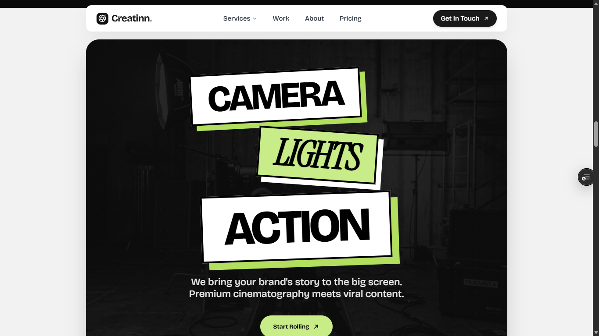
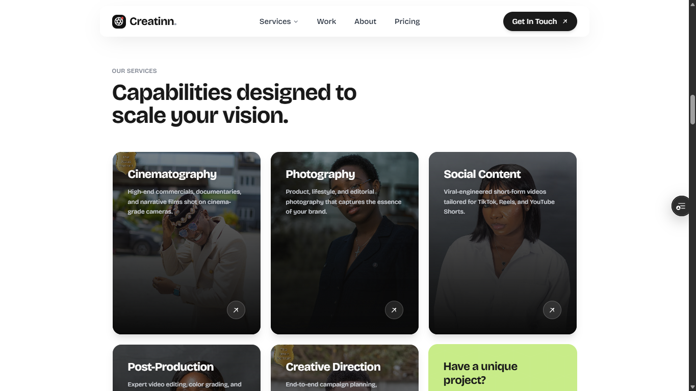
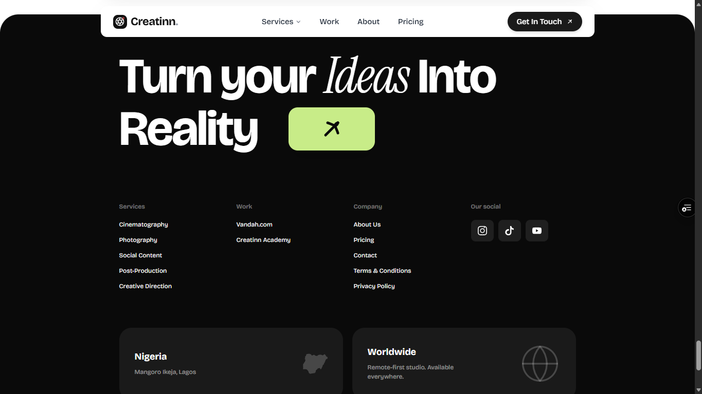

Creatinn Agency
The agency arm of Creatinn—a marketing site for a visual content studio in Lagos, with services, work, pricing, client stories and contact, built to look as premium as the films they make.




Context
Creatinn runs a content studio and an academy under one brand. For the studio side, their web presence needed to feel as premium as the work—cinematic, fast and built to earn enquiries, not just to look pretty.
What I built
A full marketing site: hero, services, portfolio-style work section, client stories, transparent pricing and a clear contact path. Built with Next.js so the imagery stays cinematic and the site is fast on every device.
Why this approach
A creative studio sells taste, so the site lets the imagery lead and keeps the copy tight. Clear hierarchy and a single obvious contact path turn attention into bookings.
Role & scope
Frontend build and design engineering for the studio’s site, from structure and interactions through to performance.
Result
A site that reads like the studio’s showreel, positioned to convert visitors into exactly the clients they want.